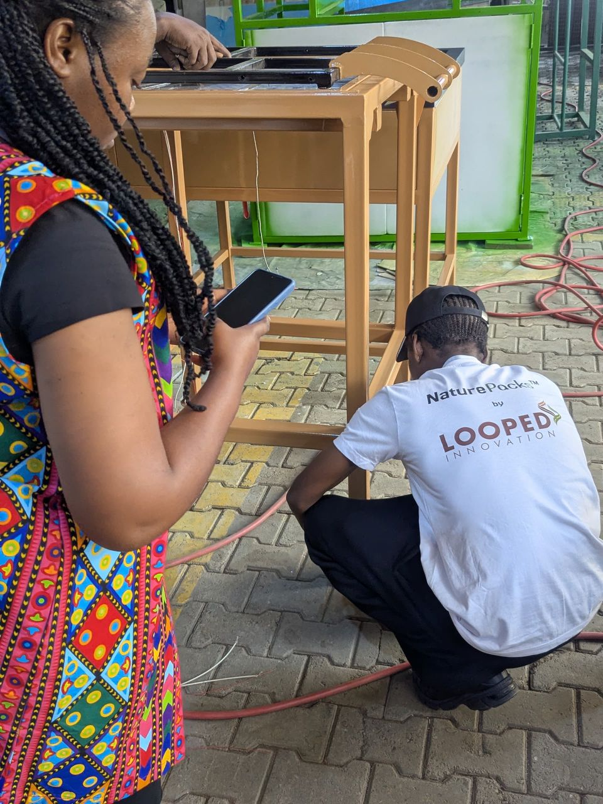
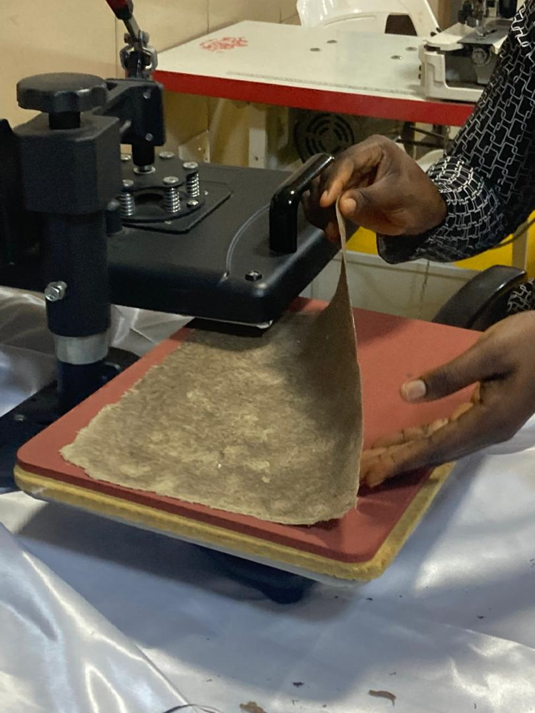
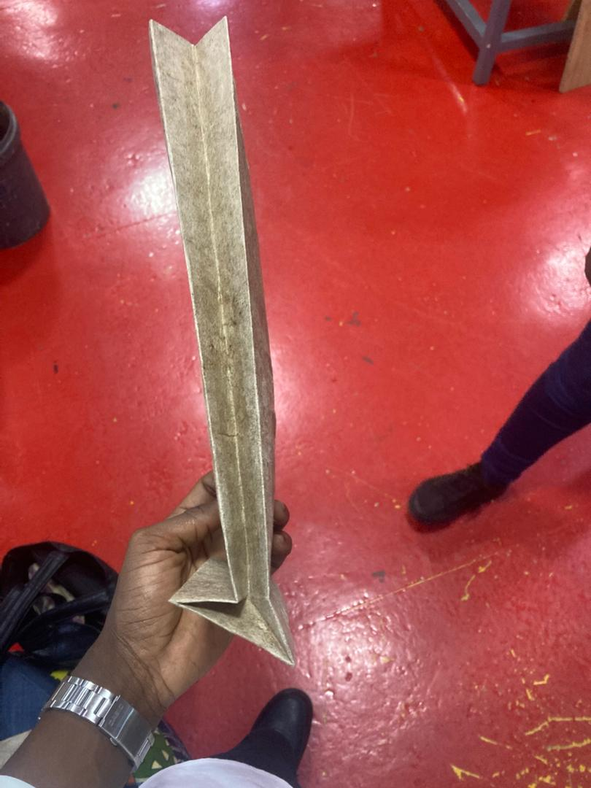
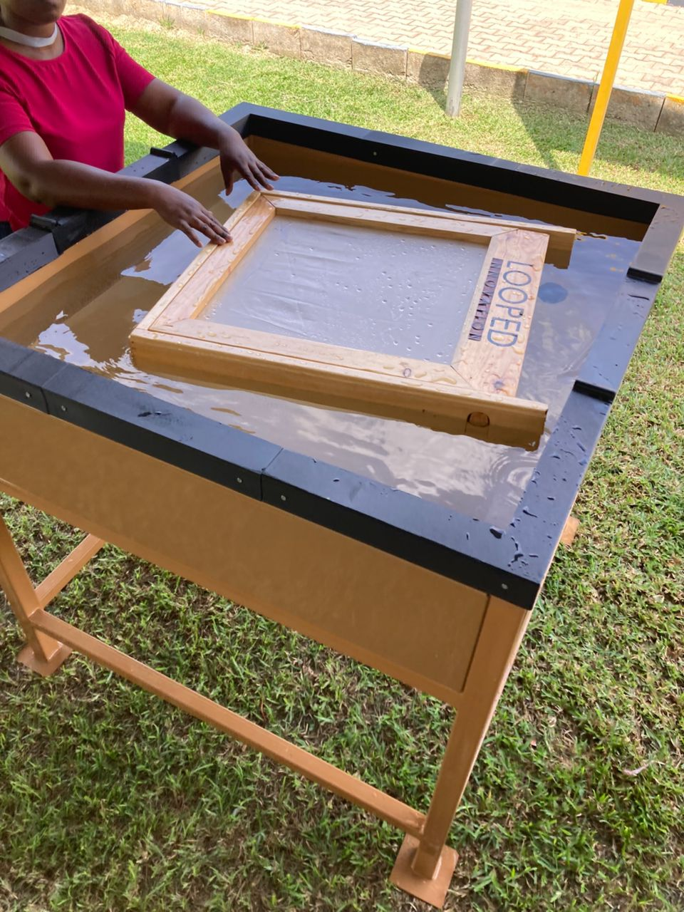
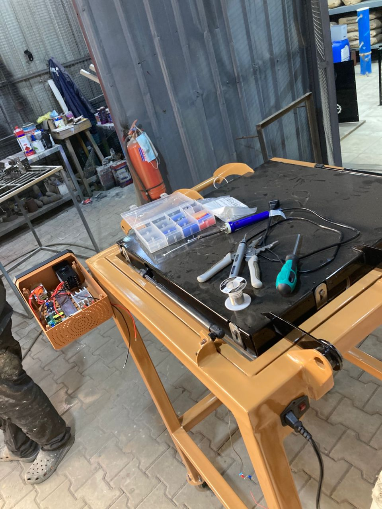
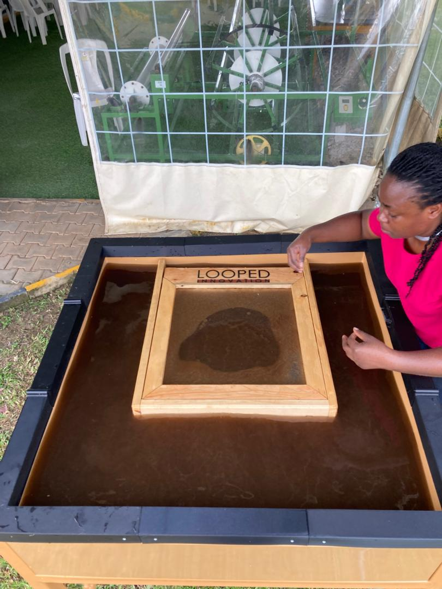

The Process and Equipment
How we turn farm waste into packaging.
Every NaturePacks product starts on a plantation and ends in our fabrication workshop. Custom-built machines, real fiber, real paper.
Step 01: Raw Material Collection
We start where farmers leave off.
After a banana or plantain harvest, the stems get left on the ground to rot. We collect them from local farming communities before that happens and bring them into our production process.
- Banana and plantain stems with high natural fiber content
- Dried stem husks collected from local farms
- Sourced within short supply chains to keep costs down
- No trees cut. No new land cleared. Just waste put to work.


Step 02: Pulping and Fiber Preparation
Breaking the stems down into something we can work with.
The dried stems go into our custom-built steel pulping basin. Water breaks down the cellular structure of the fibers until we have a thick, even pulp ready for the next stage.
- Heavy-gauge steel basin designed and fabricated in-house
- Water-based process with no harsh chemicals
- Blending brings the fiber concentration to the right consistency
- Pulp quality checked before moving to sheet formation

Step 03: Sheet Formation
Pulp becomes paper on the deckle.
The pulp gets poured over our Looped Innovation mould and deckle frame. The mesh screen underneath catches the fibers evenly as the water drains through, laying down a flat, uniform sheet.
- Handcrafted wooden mould and deckle, Looped Innovation branded
- Fine mesh screen forms an even fiber layer every time
- Sheet thickness adjusted by controlling pulp volume
- Water drains naturally during the forming process


Step 04: Pressing and Drying
Heat and pressure turn the wet sheet into real paper.
The wet sheets go straight into our custom-built drying chassis. Heating elements cure the sheet from inside while clamps press it flat. What comes out is dry, firm and ready to cut.
- Custom-engineered heated drying chassis built in our workshop
- Heating elements distribute heat evenly across the sheet
- Clamp system presses the sheet flat under controlled pressure
- Mounted on wheels so we can move it anywhere in the workshop


Step 05: Output
This is the paper that becomes your packaging.
Each finished sheet gets checked for strength, texture and thickness. The ones that pass go into production. The result is packaging that holds up, looks good and tells a story worth telling.
- Natural fiber texture visible in every finished product
- Moisture-resistant once fully cured
- Cut and formed into bags, boxes and flat sheets
- Your branding printed directly on the natural material

Equipment Being Designed
We could not find the right machines, so we built them.
No off-the-shelf equipment existed for what we are doing. Every machine in our production line was designed and fabricated in-house, built specifically for turning banana fiber into packaging-grade paper.
Pulping Basin
A heavy-gauge welded steel vat built to hold and blend the banana fiber slurry during the pulping stage. Designed and fabricated entirely by our team.
In FabricationHeated Drying Chassis
Our prototype pressing and drying machine. Built with integrated heating elements and a clamp system that holds sheets flat while they cure. Mounted on wheels for easy repositioning.
Prototype Stage
Mould and Deckle Frame
A handcrafted wooden frame with a fine mesh screen used to form individual paper sheets from pulp. The core tool in our sheet formation process.
OperationalIn Action
See it happening with your own eyes.
Sheet Formation
Watch the fiber pulp being laid out and formed into a flat paper sheet on the mould.
Drying Chassis in Action
The clamp and press system of our prototype drying machine, showing how it works in the workshop.
The Deckle
The Looped Innovation branded mould and deckle frame in use during sheet forming.
Ready to order sustainable packaging?
Visit our website or get in touch directly.